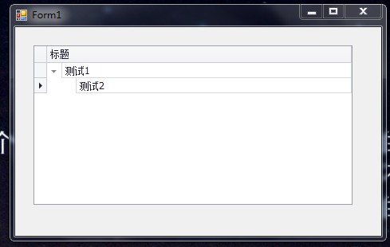
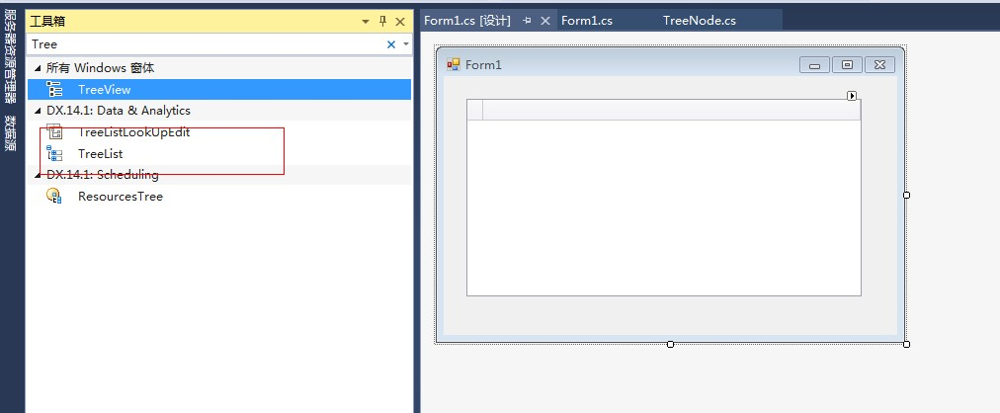
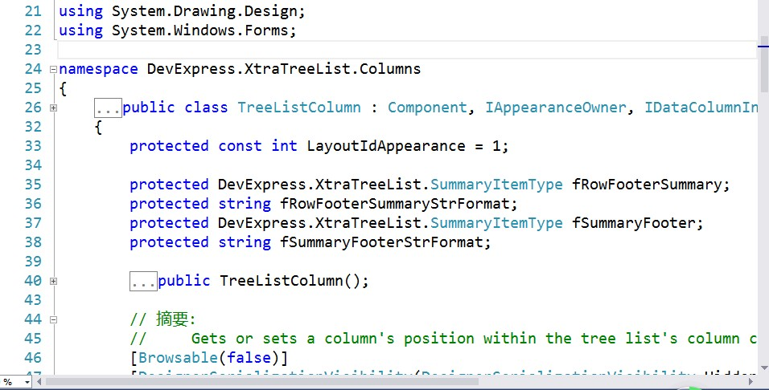

原文出处:本文由博客园博主霸道流氓提供。
原文连接:https://www.cnblogs.com/badaoliumangqizhi/p/11412053.html
原文连接:https://www.cnblogs.com/badaoliumangqizhi/p/11412053.html
场景
Winform控件-DevExpress18下载安装注册以及在VS中使用：
https://blog.csdn.net/BADAO_LIUMANG_QIZHI/article/details/100061243
在上面安装完DevExpress的基础上使用其Treelist控件。
然后就可以新建数据源的List，并赋值给TreeList。
效果

实现
新建Winform程序，然后拖拽一个TreeList

新建数据源类TreeNode
using System;
using System.Collections.Generic;
using System.Linq;
using System.Text;
using System.Threading.Tasks;
namespace DevExpressSimple
{
class TreeNode
{
//标识Id
private string id;
//父级节点ID
private string parentId;
//节点显示文本
private string nodeText;
public string NodeText
{
get { return nodeText; }
set { nodeText = value; }
}
public string ParentId
{
get { return parentId; }
set { parentId = value; }
}
public string Id
{
get { return id; }
set { id = value; }
}
}
}
双击窗体进入窗体的加载事件中。
private void Form1_Load(object sender, EventArgs e)
{
string keyFieldName = "Id";
string parentFieldName = "ParentId";
//新建list数据源
List<TreeNode> data = new List<TreeNode>();
data.Add(new TreeNode() { Id = "root", ParentId = String.Empty, NodeText = "测试1" });
data.Add(new TreeNode() { Id = "first", ParentId = "root", NodeText = "测试2" });
//列
DevExpress.XtraTreeList.Columns.TreeListColumn colNode = new DevExpress.XtraTreeList.Columns.TreeListColumn();
//设置名字
colNode.Name = "名字";
//设置标题
colNode.Caption = "标题";
//设置从数据源分配给当前列的字段名。
colNode.FieldName = "NodeText";
//设置树列表中显示当前列的位置。
colNode.VisibleIndex = 0;
//是否可见
colNode.Visible = true;
//是否允许编辑
colNode.OptionsColumn.AllowEdit = false;
//是否允许移动
colNode.OptionsColumn.AllowMove = false;
//是否允许移动至自定义窗体
colNode.OptionsColumn.AllowMoveToCustomizationForm = false;
//是否允许排序
colNode.OptionsColumn.AllowSort = false;
//是否固定列宽
colNode.OptionsColumn.FixedWidth = false;
//是否只读
colNode.OptionsColumn.ReadOnly = true;
//移除列后是否允许在自定义窗体中显示
colNode.OptionsColumn.ShowInCustomizationForm = true;
//先清除列
this.treeList1.Columns.Clear();
//将列数组添加到集合的结尾。
this.treeList1.Columns.AddRange(new DevExpress.XtraTreeList.Columns.TreeListColumn[] { colNode });
#region 绑定数据源
//设置属性KeyFieldName ParentFieldName
//设置一个值，该值指定绑定到XtratreeList控件的数据源的键字段
this.treeList1.KeyFieldName = keyFieldName;
//设置一个值，该值表示标识此数据源中父记录的数据源字段。
this.treeList1.ParentFieldName = parentFieldName;
this.treeList1.DataSource = data;
//刷新数据
this.treeList1.RefreshDataSource();
#endregion
}
注：
1.list就是要显示的数据源，其中Id属性就是别的节点指定父节点的标志。
2.ParentId就是指定父节点，对应节点的Id属性，如果是根节点，则父节点为空。
3.NodeText就是节点要显示的文本。
4.给list赋值之后，还要告诉TreeList对应的关系，所以需要设置treelist的两个属性
KeyFiledName和ParentFiledName。其中KeyFiledName是指定绑定到控件的数据源的键字段，就是指定上面的Id，即作为节点标志的字段。
ParentFiledName是标志此数据 源中父记录的数据源字段。
5.然后还要使用TreeListColumn新建列对象，设置列相关的一些属性，还要通过FieldName指定从数据源中取哪个字段分配给这列。
6.更多的属性直接通过源码中查看源码属性获取。

源码下载
https://download.csdn.net/download/badao_liumang_qizhi/11614224